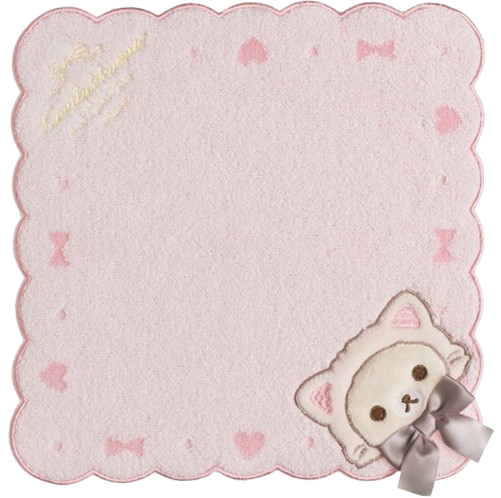
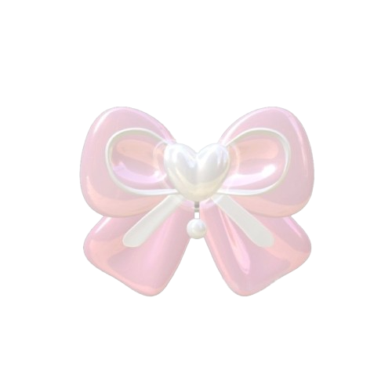
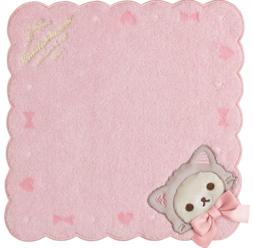
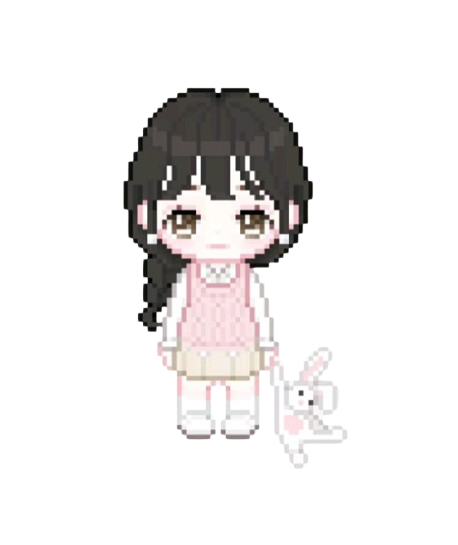
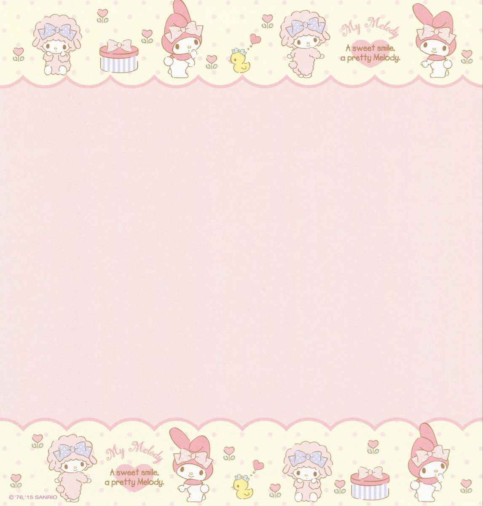
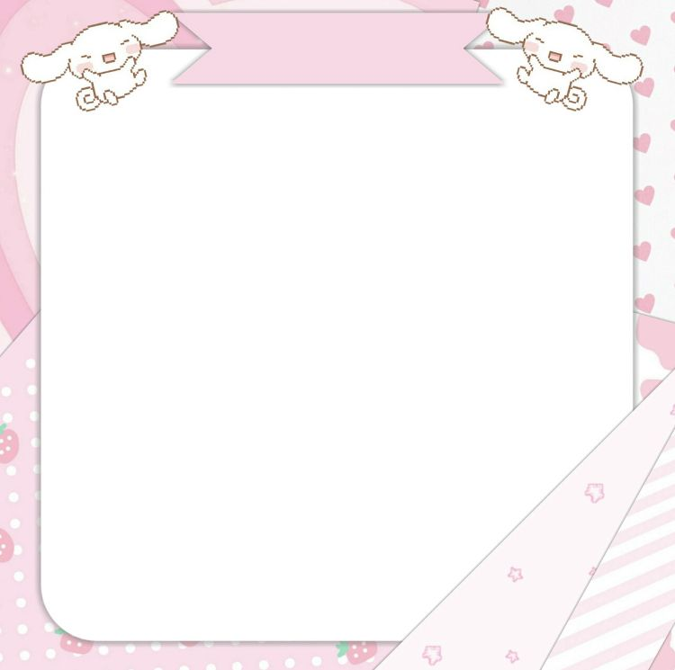

everytime we say good night, i silently say good morning again. every time i get the chance to talk to u, i never want the night to end. seeing u is js
euphoric

hello there, cote little human being, w adorable round eyes, tiny dimples, and a charmingly wide forehead. i hope u are doing js fine this school or christmas break
what u are abt to read are some thoughts i write down when i space out, stare blankly on the bus, or have nothing else to think abt. it might sound cringe, but
here it is
these are the words that never got to u, and i rlly can't say 'em in front of u or write them in a letter bcs my handwriting's bad. so, i made this web for u
to read it
you'll get a glimpse of how i see things through this web. i poured my creativity and imagination into making this. btw, these words haven't been heard in the way i
mean them
how come everything abt u, in every way? in every smiling face i see, ur face appears in my mind so tenderly. everytime i go out, i look for ur face
u are the thought i'd love to think abt forever. i wonder when will be the time that i will think of u for the second time bcs you've never left my mind
i'll stay here on earth as long as i get to know that u are around here (not rlly sure abt staying here on earth). that charmingly wide forehead still visits me on my dream, huh?
i'll keep dreaming of u through countless seasons, writing endless songs until my heart has no more pages left—tho i doubt that will ever happen
every time u appear in my dreams, it feels like smth straight out of a fairytale. u are as mesmerizing as stephen curry's shooting form
idk why, but i can't help imagining us crossing paths in some random place wherever i go. and whenever i go outside and head somewhere near ur place,
i always find myself
walking past it


take me back to the time when we were js few steps and buildings away from one another, and not different universities and apart
i've had more conversations w u in my head than i've had w my classmates this school year. i think we still have inks left, so our story is not ending here
keep smiling today, next week, next month, next year, next decade, and even for a century. don't hide that cote little dimple of yours
idk why, but most of the songs i listen to somehow remind me of u. back then, i hated the thoughts that kept me wide awake, but now i don't mind them
when they're abt u
if only the walls in my room could talk, you'd wonder what they'd say—it'd all be abt my thoughts of u. nothing feels better than falling asleep and
dreaming of u
my grades have been great lately. it's probably bcs of u. i constantly strive to improve, js to reach the same heights as u. w the fate of the universe on
the line, i'ma go to ur
place
js a couple words from u could light up everything in my sight. every time i look at ur picture, u remind me of a light blue and pink bracelet or ribbon
i kind of envy the people who live near u. if i lived close to u, i'd probably throw rocks at ur window every night. the back pages of my notebook, full of everything abt u
i'm thankful that i was born in this place and that i get the chance to see ur angelic face. i could js stare at ur picture until i fall asleep, and after that,
i'll dream of u


i didn't have much time to make this bcs i've been having bad days and locked myself in my room for a while. now, i finally have the courage to create this. i originally planned to start this on the first day of my class, intending to compile all the random poetic thoughts in my head and put them here. but life got busy, and i didn't have much time to think of anything
making this wasn't easy since i had no prior knowledge—i started completely from scratch. i watched a bunch of lessons to figure it out, and ig it turned out okay. anw, a huge thanks to u bcs u are the reason why i'm doing this. it made me productive and helped deepen and improve my skills
i hope ur mom, lil sis, big bros, stuffed toys, and lovely cats are having a great day and night every day and every night. btw, tell ur lil sis congrats on her academic achievements—she's doing great! also, remind ur mom to take some beauty rest and avoid stress as much as possible. anw, a very merry christmas to them all and a happy new year!
in case u didn't notice or missed the meaning behind the picture above, u were wearing a pink top and khaki bottom, so i matched it w the cote picture above. this might make ur eyes teary, or maybe not, but i hope u are as happy as can be while reading these messages. hey, always drink more water, sleep early, and take care of urself, but ik u often don't follow that
if u are tearing up rn, wipe those tears away, but ig it can't be helped since u are the queen of tears. i remember those days when there was only one person i'd always wait to message me. i couldn't wait any longer, so i'd try to have a conversation w u in my head. even tho those conversations weren't real, they made me feel comfortably safe
whenever u pop up in my head, it feels like flowers are growing in my chest. i wish i could tell u what u mean to me. i'd pick them all and give it all to u. a bouquet of unsaid feelings. have u ever felt warm js by hearing someone's name or thinking abt them? that's exactly how i feel whenever u cross my mind
why i can't get u off my mind? it's like u are permanently trapped here, as if u are unable to escape my thoughts, and u are constantly wandering in a garden full of roses. i still can't fathom that we live in the same city; the probability of it happening is js smth i can't comprehend
lately, i find my life worth living bcs i met u. u are a part of it. back then, everything was blurry and dark, like i was going places w no direction. it all felt unclear, but the moment i met you, everything changed. it became bright and colorful, the air smells like freshly watered flowers. i started thinking abt better things instead of downing myself and giving up
the places i go started to look lively, making me realize there's so much more in life that i must chase—more things, places, and experiences to witness and sense. when life gets hard, u are like a house that feels like home, making me feel it's okay to be vulnerable and sad for a while
u serve as a reminder that there's no need to rush in solving things out, that it's okay to move at my own pace. whether i go slow or fast, the light u provide along the way will never fade, and u continue to light my path wherever i go. i've rlly learned so much from u in unexplainable (ineffable) ways


sometimes, life feels like i'm lost in an ocean of thoughts, but whenever i feel this way, i js think of ur eyes. they have a kind of silent magic that somehow snaps me back to reality and helps me get back to my usual self. i hope u smile often, bcs it makes everything feel
a little easier. anw, i still buy an
ice cream everytime i achieve
smth
honestly, years ago, i wanted to quit on this world or life, and even now, there are moments i feel that way. but somehow, smth keeps me going. if i had given up already, i would never have been able to hear or see anything from u again, and i'd deffo miss the warm look in ur eyes and also ur
high-pitched laugh, prolly
i'm always curious abt ur day, what u are doing, and how u are feeling. i'm also curious abt the songs u listen to when u are in different moods, and what thoughts are running through ur head late at night. what do u do when u are awake at that time? i'm rlly curious at everything, even the little things
abt u
i still regret not enrolling in that university, the one that's only a short distance from yours. if i had enrolled at that university, the chances of seeing u on the bus would've been much higher. i imagine that before or after class, by chance seeing u, i often wonder what could've happened—what stories
we'd share and what conversations
we'd have
all of my favorite conversations always happen in the am. i rlly still can't believe that we live in the same city. js a random thing: i actually named one of my accounts "theo" back then. little did i know that it would mean smth after a few years
idk why, but even the most meaningless conversations w u is meaningful to me. lately, i've been getting enough hours of sleep, but it still doesn't feel like enough. however, if i only get 10 mins of sleep, but it's a dream abt u, it feels like i've had 8 hours of sleep. i had no idea that the day i met u would come to mean
this much
i'm pretty sure u don't know abt this, but i often find myself looking u up online. i always stay updated on whatever u share, and sometimes i catch myself spacing out while gazing at ur picture. it's so mesmerizing that it feels like someone would have to slap me to snap back into reality
i remember the days when i found out that u wait for the bus around the luzon area. i also remember when i would intentionally get prepared slowly, hoping to get the chance to see u at the bus stop bcs i knew you'd be late or there around 5:30 am. but sometimes, i'd get bored if i got on the bus and u
weren't there
on the days u were at the bus stop or on the bus, i would try to act like i didn’t notice u, like i didn't care that u were there. but honestly, that'd be the highlight of my day. js seeing those eyes, dimples, and curly hair even for a second or a millisecond, was enough to make my day great
i've got more to say, but i didn't have much time, so ig i'll js leave it here. that's all for now—i might continue this next time, or maybe not. i hope this brings a smile to ur face, big enough to show those tiny cote dimples. i think the wider u smile, the deeper they get,
so please smile even bigger. a'ight,
bye, charmingly wide forehead!